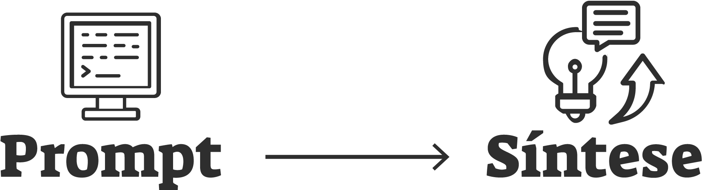

Navegue pelas seções:


Apresentação e contextualização da IA generativa
Antes de explorar a IA gen como ferramenta, é importante entender a lógica geral de seu funcionamento, que é diferente das ferramentas de busca que estávamos acostumados a usar.
As ferramentas de busca que temos por aí exploram o conteúdo da internet através de mecanismos de rastreio, indexação e ranqueamento. Quando digitamos um termo ou fazemos uma pergunta, elas nos retornam endereços nos quais o termo aparece ou a pergunta pode ter sido respondida. Note que a busca retorna informações já disponíveis na internet, isto é, nenhum conteúdo está sendo “criado”.
Assim como as ferramentas de busca, a IA gen possui um banco de dados no qual realiza buscas – este banco pode ser privado, contendo conteúdo selecionado, ou público, envolvendo toda a web. A grande premissa da IA gen é gerar uma resposta com base naquilo que “aprendeu” com o banco a partir de um comando (prompt) dado pelo usuário.
Dessa forma, ao invés de retornar uma série de referências, como nas buscas convencionais, a resposta gerada promete ser uma síntese adequada e direta para o comando. Na prática, quanto mais refinado for esse comando, mais refinada será a resposta dada pela IA.
Mas como que uma IA “aprende”?
Ela é treinada para localizar padrões, usando algoritmos de aprendizado de máquina. Estes, analisam palavras, suas conexões e relações para entender padrões e utilizá-los na produção de conteúdo. Aqui, vale a lembrança que a qualidade dos conteúdos depende muito dos bancos de dados utilizados no treinamento da IA. Problemas neste processo podem gerar vieses indesejáveis, como a replicação de erros ou preconceitos, no conteúdo.
Também não é comum que as ferramentas de IA apresentem suas referências, dificultando o rastreio de fontes de informação ou a auditoria do banco usado para o treinamento. Além disso, nem sempre os algoritmos fazem associações corretas, produzindo um conteúdo que pode nos induzir ao erro.
Assim, é altamente recomendável a realização de uma revisão e uma pesquisa suplementar em outras fontes para conferir aquilo que a IA propôs.
Assim, é altamente recomendável a realização de uma revisão e uma pesquisa suplementar em outras fontes para conferir aquilo que a IA propôs.
A IA gen é uma novidade que veio para ficar. Portanto, entender os potenciais, os limites e os usos éticos dessa tecnologia na vida acadêmica e profissional é essencial.
Alguns produtos que utilizam IA gen
Existem IAs gen variadas, trabalhando com conteúdo de texto, vídeos, música etc. Aqui, priorizamos algumas IAs gen de uso acadêmico mais imediato e com versões gratuitas.
Ferramentas como ChatGPT, Gemini e Microsoft Copilot trabalham de forma bastante similar, usando uma lógica de chat para gerar conteúdo. Cada uma delas têm pontos fortes e fracos a serem avaliados e a melhor maneira de escolher a sua “favorita” é testá-las em diferentes funcionalidades e avaliar qual se adapta melhor aos seus fins - seja pesquisar informações pontuais, pedir o desenvolvimento de conceitos, referências bibliográficas, auxílio na elaboração de códigos, revisão de textos, etc.
A Notebook LM da Google é outro produto interessante que deve ser considerado. O usuário consegue alimentá-lo com suas próprias fontes, permitindo uma interação mais focada nos materiais em que está trabalhando. Nele, é possível organizar blocos de notas interativos e baseados principalmente nos materiais em mãos.
Há várias IAs gen disponíveis e tantas outras em desenvolvimento, sendo incerto saber quais terão alguma utilidade a longo prazo no nosso dia a dia.

IA em questões matemáticas
O desenvolvimento de muitas IAs gen (como ChatGPT, Copilot e Gemini) é focado na atuação como um grande modelo de linguagem, de modo que a interpretação de problemas matemáticos avançados ainda precisa ser aprimorada. A utilização de banco de dados compostos massivamente por textos focados na conversação limita a realização de operações e cálculos matemáticos.
Ainda assim, as IAs têm capacidade de adquirir alguma habilidade lógico-matemática através de textos sistemicamente disponíveis no banco de dados, permitindo a solução de alguns problemas simples.
Porém, por vezes, ao invés de retornar um erro, por exemplo, as IAs são desenhadas para entregar uma solução (mesmo que "inventada") que soe plausível, mas que pode ser inconsistente e pouco confiável.
Há ferramentas disponíveis que são capazes de lidar melhor com questões matemáticas, como o Photomath, o MathGPT e o Wolfram Alpha. Todas utilizam algoritmos de IA em algum momento, porém o aspecto generativo das respostas obtidas varia de um serviço para outro.
O Photomath é focado na explicação das etapas matemáticas envolvidas em uma situação-problema e permite utilizar fotografias e imagens escaneadas como comando de entrada.
O MathGPT é uma ferramenta de IA desenvolvida especificamente para solução de problemas matemáticos e assistência conceitual.
O Wolfram Alpha responde às perguntas diretamente, mediante o processamento da resposta extraída de base de dados estruturados e sua versão gratuita não apresenta explicações detalhadas. Ainda, um plugin do Wolfram pode ser utilizado em conjunto com o ChatGPT, permitindo a integração dos recursos.
É importante entender como escrever o comando de entrada.
Por exemplo, o Wolfram Alpha não é capaz de entender totalmente comandos em português, nesse caso é melhor utilizar comandos em inglês. Tente descrever todas as informações necessárias para obter a resposta desejada.
Por exemplo, se queremos encontrar os valores para os quais a função f(x)=x²-2x+1 é maior do que 1, pesquisar “x²-2x+1” não retornará o resultado desejado (apesar de apresentar outras informações), mas pesquisar “x²-2x+1 > 1” ou “find x²-2x+1 greater than 1” resultará na resposta desejada. Para este exemplo a resposta seria x > 2 ou x < 0.
Comandos elaborados como “f(x)=x²-2x+1 where f(x)>1”
O Wolfram pode, ainda, fornecer detalhes gerais, mas não necessariamente a resposta para uma determinada situação.

Comandos adequados geram respostas adequadas.
Importante ter em mente que problemas de interpretação podem comprometer o entendimento do que deve ser respondido.
O que fazer quando a resolução está correta, mas não há resposta correta?
Mesmo acertando a resolução de um problema, ao se deparar com uma questão objetiva a IA gen tende a assinalar uma alternativa correta, mesmo que todas estejam incorretas devido a um erro na formulação da questão, por exemplo. Isso demonstra a falta de capacidade interpretativa da IA, pois mesmo desenvolvendo o raciocínio correto não é capaz de perceber que nenhuma das alternativas é igual à resposta obtida.
Como utilizar a IA gen? Pensando em comandos.
As instruções que você passa para uma IA gen são chamadas de comandos ou prompts. Quanto melhor elas forem elaboradas, mais interessante e adequada será a resposta dada pela IA.
Quando realizar uma solicitação à IA os comandos fornecidos devem ser suficientemente claros e direcionados a resposta que deseja obter. Uma dica para sua redação é elaborá-las como se você estivesse contando uma história inédita para outra pessoa. Informações como “o quê”, “quem”, “quando”, “onde”, “como” e “por quê” são essenciais para compor o contexto da história e facilitar a compreensão do ouvinte.
Com a IA gen, quanto mais informações contextuais o usuário fornecer, mais específica será a sua resposta.
Veja o exemplo usando uma questão do ENEM 2024 Questão ENEM 2024 - 1º Dia:
Uma das principais atividades provocadas pela arte, a reflexão, é abandonada pela indústria cultural. A indústria cultural seria como uma isca que ilude os indivíduos, com o sonho de que eles são livres, originais, únicos e especiais quando, na verdade, os trata como servos e partes de uma massa homogênea. FONTES, B.; MAGALHÃES, R. O que é indústria cultural? In: BODART, C. N. (Org.). Conceitos e categorias do ensino de sociologia. Maceió: Café com Sociologia, 2021 (adaptado).
Ao analisar as consequências da dinâmica apresentada no texto, as autoras destacam a importância do conceito como:
- A) Ferramenta de luta coletiva
- B) Mecanismo de controle social.
- C) Instituição de interesse público.
- D) Organização da iniciativa privada.
- E) Instrumento de manipulação estatal.
Na IA:
Comando: Resolva a questão do ENEM.
Conteúdo gerado pela IA:
A questão aborda a crítica à indústria cultural, que, segundo os autores, ilude os indivíduos ao fazê-los acreditar que são livres e únicos, enquanto na verdade os trata como partes de uma massa homogênea.
Diante disso, a alternativa que melhor reflete essa crítica é:
B) Mecanismo de controle social.
A indústria cultural é vista como um meio de controle social, onde os indivíduos são manipulados e conformados a uma cultura de massa, perdendo a capacidade de reflexão crítica e individualidade.
Comentários sobre o retorno da IA: A resposta dada pela IA está correta. No entanto, suas explicações são superficiais e limitam-se a reciclar trechos dos textos já presentes na própria questão de referência. Assim, a IA atua como um “papagaio” repetindo dados já fornecidos e não abre a possibilidade para a continuidade dos estudos.
Na IA (alternativa):
Comando: Eu estou estudando para a prova do ENEM e quero que você faça a análise dessa questão da área de Ciências Humanas e suas Tecnologias. Sua análise deve fornecer a resolução da questão, destacar o principal conceito em discussão, dar exemplo de 1 autor(a) que trata do tema e sugerir dois temas ou conceitos das ciências humanas relacionados ao conceito principal e que seriam úteis para eu conhecer. A resolução deve ser resumida em um parágrafo e os demais itens fornecidos em tópicos curtos.
Conteúdo gerado pela IA:
Resolução: A questão critica a indústria cultural por iludir os indivíduos, fazendo-os acreditar que são livres e únicos, enquanto os trata como partes de uma massa homogênea. A alternativa correta é B) Mecanismo de controle social, pois a indústria cultural é vista como um meio de manipulação e conformação social, limitando a reflexão crítica e a individualidade.
- Conceito Principal: Indústria Cultural
- Autor(a) Relevante: Theodor Adorno
- Temas ou Conceitos Relacionados:
Alienação: Conceito de Karl Marx que descreve a desconexão dos trabalhadores em relação ao produto de seu trabalho e à sociedade.
Hegemonia Cultural: Conceito de Antonio Gramsci que explica como a classe dominante mantém o controle ideológico sobre a sociedade.
Esses conceitos são úteis para entender como a cultura e a ideologia podem ser usadas para controlar e influenciar a sociedade. Se precisar de mais detalhes ou tiver outras dúvidas, estou aqui para ajudar!
Comentários sobre o retorno da IA: O texto da resolução manteve-se correto e no padrão de “reciclar” elementos já dados. No entanto, a resposta da IA apresentou informações úteis para a continuidade de estudos e apontou conceitos e autores que valem a pena serem conhecidos, pois propõem ideias e discussões que complementam o conceito principal. Assim, o estudante não fica limitado a um breve texto de resolução e encontra insights para pesquisas posteriores.
Citações, fatos, dados, palavras-chave e referências são informações úteis para complementar seus comandos e enriquecer sua experiência, aumentando a gama de respostas que podem ser construídas pensando nas suas necessidades.
Vamos entender melhor!
Por exemplo, o comando “Escreva um texto explicativo de até 1000 caracteres sobre o conceito de Burocracia de Max Weber para que um estudante de Introdução à Sociologia possa estudar para a prova.” produzirá um resultado diferente do que comandos como “Explique a Burocracia” ou “Escreva um guia de estudos universitários em tópicos, sugerindo leituras sobre o conceito de Burocracia em Max Weber,” ou “Faça uma apresentação de Power Point sobre Burocracia para um aluno do ensino médio”.
Uma vez que tenha obtido a resposta desejada é essencial checar a veracidade e a precisão da informação obtida. Para fazer isso, revisite suas anotações ou sites sobre os temas abordados, mantendo uma postura crítica com as respostas obtidas. Lembre-se, não tenha medo de contestar a resposta obtida caso perceba alguma inconsistência, afinal de contas a IA não é à prova de falhas.
Como posso usar a IA para meus estudos?
Neste ponto, devemos ter em mente qual é o objetivo de se utilizar a IA em seu aprendizado e desenvolvimento profissional. A busca por soluções prontas através da IA muitas vezes resulta em informações questionáveis, inverídicas e errôneas, prejudicando seu desenvolvimento.
Desafios sempre estiveram presentes nas pesquisas realizadas por estudantes. Até pouco tempo, a biblioteca era o meio mais utilizado para pesquisas e estudos. Nesta linha, as pesquisas em revistas também se popularizaram e, embora sejam publicações com maior edição e contribuição de um grupo de profissionais não estão livre de erros, vieses e informações por vezes duvidosas.
Com o advento da internet e mecanismos de pesquisa, como o Google, discernir entre o que é informação de qualidade ou não se tornou ainda mais difícil, e o pensamento crítico tornou-se ainda mais necessário.
Com o advento da internet e mecanismos de pesquisa, como o Google, discernir entre o que é informação de qualidade ou não se tornou ainda mais difícil, e o pensamento crítico tornou-se ainda mais necessário.
Agora, com o uso de tecnologias inteligentes, como IA gen, o desafio se torna ainda maior. Está claro que o aumento do acesso à informação e opções de tecnologia são essenciais, mas novos desafios emergem quanto ao seu uso adequado.
O processo de aprendizagem permite não apenas que o aluno absorva o conteúdo ensinado, mas também que desenvolva seu raciocínio crítico e lógico, sendo capaz de lidar com diferentes cenários em seu cotidiano.
Neste sentido, listamos aqui sugestões adequadas para se utilizar esta poderosa ferramenta em benefício de seu desenvolvimento enquanto aluno e futuro profissional:
IA: Questão de Ética!
O uso da Inteligência Artificial é globalmente discutido e difundido, uma vez que este apresenta diversas peculiaridades que são novidade em nossa atualidade. O “não saber usar” essa tecnologia não implica apenas em obter informações incorretas, mas também questões mais sensíveis. Assim, listamos relevantes pontos que tornam o "como saber usar” a IA algo tão importante.
A IA em sua rotina Univesp
O uso da IA pode contribuir em sua rotina na Univesp, seja nos estudos, seja para lidar com as atividades rotineiras. No entanto, ela deve atuar “com você” e não “por você”.
Uma opção interessante de uso de IA em sua rotina é explorar pontos específicos de uma norma ou orientação em que você tenha dúvidas. Você pode, por exemplo, baixá-las em pdf e inseri-las no Notebook LM para realizar perguntas sobre temas específicos.
Outras opções, são usar a IA como assistente na redação de seus requerimentos de prova. Neste caso, você pode usar a IA para conversar sobre uma questão e avaliar os pontos em que ficou com dúvida ou buscar nova fontes para aprofundar conceitos. Uma aplicação interessante é tentar explicar para a IA sua crítica sobre a questão e avaliar o quanto ela é pertinente ou bem explicada. Além de contar com a IA para discutir ideias, você pode usá-la para avaliar seu texto sob diversos critérios, como clareza, objetividade, pertinência e correção conceitual.
Exemplos de Comandos possíveis para a sua rotina na Univesp
Verifique em [documento] quais são as regras e procedimentos para [tema].
Reproduza os trechos específicos do assunto e os explique para que eu possa [ação] em [contexto].
A partir da análise do (a) [documento] elabore um checklist sobre [tema] para que eu possa me organizar para requisitar [ação] no (a) [local].
Eu respondi a uma questão sobre o [tema] em uma prova de [disciplina]. Depois de estudar [material] a respeito entendi que [explicação da sua ideia]. Avalie minha interpretação para eu saber se ela está correta ou incorreta e destaque seus pontos fortes e fracos.
Recentemente eu fiz uma prova da [disciplina]. Uma das questões era baseada em [material] no qual se discutia o [tema]. O gabarito apontou que a [alternativa] era a correta para responder ao [comando], mas eu selecionei [alternativa selecionada], considerada errada. Eu discordo dessa avaliação porque [motivação respaldada por argumentos e conceitos]. Avalie meu ponto de vista reunindo fontes, conceitos e argumentos que ajudem a comprová-lo se estiver correto e refutá-lo se estiver errado.
Vamos considerar alguns exemplos de uso na rotina da Univesp.
Vamos supor que você tem dúvidas sobre produtos notáveis e gostaria de utilizar uma IA generativa para aprender um pouco mais. Um comando simples pode ser “Me explique como utilizar produtos notáveis”. A resposta da IA pode ser algo como:
Comando: “Me explique como utilizar produtos notáveis".
Resposta da IA:
Claro! Produtos notáveis são bastante úteis quando você precisa simplificar expressões algébricas. Aqui estão os principais produtos notáveis e como utilizá-los:
1. Quadrado da soma de dois termos

2. Quadrado da diferença de dois termos

3. Produto da soma pela diferença de dois termos

4. Cubo da soma de dois termos

5. Cubo da diferença de dois termos

Essas fórmulas ajudam a evitar longos cálculos e facilitam a resolução de equações e fatoração de polinômios. Vamos ver um exemplo prático com o quadrado da soma:
Exemplo:
Dado $$(x + 5)^2$$:
1. Use a fórmula $$(a + b)^2 = a^2 + 2ab + b^2$$
2. Identifique $$a = x$$ e $$b = 5$$
3. Calcule $$a^2 = x^2$$
4. Calcule $$2ab = 2(x)(5) = 10x$$
5. Calcule $$b^2 = 5^2 = 25$$
6. Junte os termos: $$x^2 + 10x + 25$$
Precisa de mais ajuda com algum exemplo específico ou outro tópico matemático? Estou aqui para ajudar!
Comentários sobre o retorno da IA: Note que a formatação de algumas equações está diferente, sendo necessário algum conhecimento para verificar se estão corretas (nesse caso estão). Além disso, ao copiar o texto da IA a expressão é desconfigurada e passa a ser representada pelo caractere , indicando a dificuldade de transpor o texto.
Podemos utilizar a IA para entender alguma questão, sempre lembrando que a resposta da IA pode não ser adequada. Se enviarmos o comando:
Comando
Assinale a alternativa que representa uma afirmação verdadeira sobre senso comum e ciência:
a) O senso comum não apresenta um sistema metodológico.
b) A diferença entre ciência e senso comum se estabelece pela natureza dos objetos em questão.
c) O senso comum se baseia exclusivamente pela percepção do cotidiano.
d) A diferença entre senso comum e ciência está na forma, nos métodos e/ou instrumentos utilizados.
e) A ciência se baseia na objetividade e busca ir além do cotidiano.
Resposta da IA:
A resposta indicará apenas a alternativa correta.
Por outro lado, se enviarmos:
Comando
Assinale as alternativas que representam uma afirmação verdadeira sobre senso comum e ciência:
a) O senso comum não apresenta um sistema metodológico.
b) A diferença entre ciência e senso comum se estabelece pela natureza dos objetos em questão.
c) O senso comum se baseia exclusivamente pela percepção do cotidiano.
d) A diferença entre senso comum e ciência está na forma, nos métodos e/ou instrumentos utilizados.
e) A ciência se baseia na objetividade e busca ir além do cotidiano.
Resposta da IA:
A resposta apresentará mais de uma alternativa correta.
Dessa forma é importante verificar criticamente as respostas fornecidas pela IA. Pode ser útil adicionar "porque cada alternativa é correta ou incorreta” para entender as associações feitas.
Podemos, ainda, solicitar referências para um determinado assunto, conforme exemplificado:
Comando
Forneça 10 referências sobre Scratch.
Resposta da IA:
Após a resposta da IA é importante verificar se, de fato, as referências existem e se o conteúdo é adequado.
Também podemos utilizar como ponto de partida para escrita. Por exemplo:
Comando
Forneça um ponto de partida para um texto sobre a importância da escrita.
Resposta da IA:
A reposta pode gerada pode ser útil para utilizar como ponto de partida na escrita de um texto. Entretanto, é importante trabalhar o texto com autoria própria, enriquecendo-o com elementos e registros pessoais e incluindo referências se necessário.
Mas, sempre se lembre! A IA gen não é livre de falhas. Como qualquer tecnologia a nosso dispor, a qualidade do seu uso depende de uma postura crítica por parte do usuário. Na utilização da IA gen o grande diferencial é você!
Mas, sempre se lembre! A IA gen não é livre de falhas. Como qualquer tecnologia a nosso dispor, a qualidade do seu uso depende de uma postura crítica por parte do usuário. Na utilização da IA gen, o grande diferencial é você!